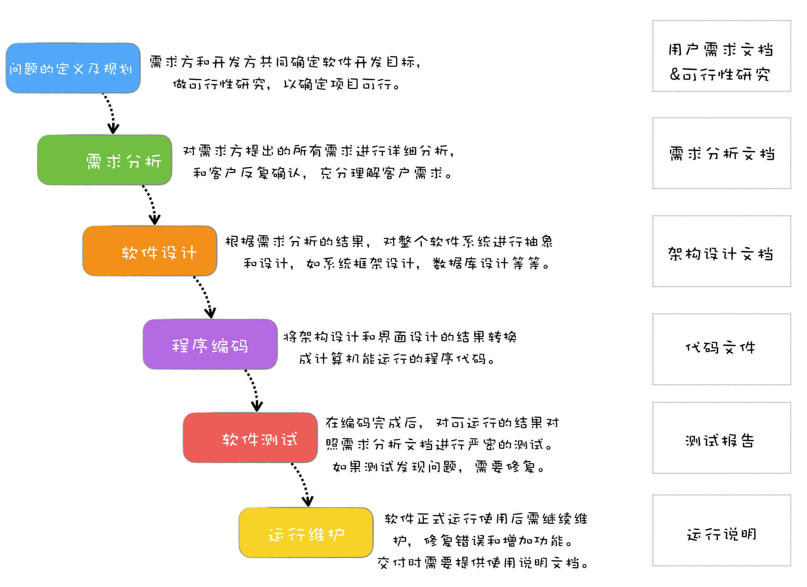
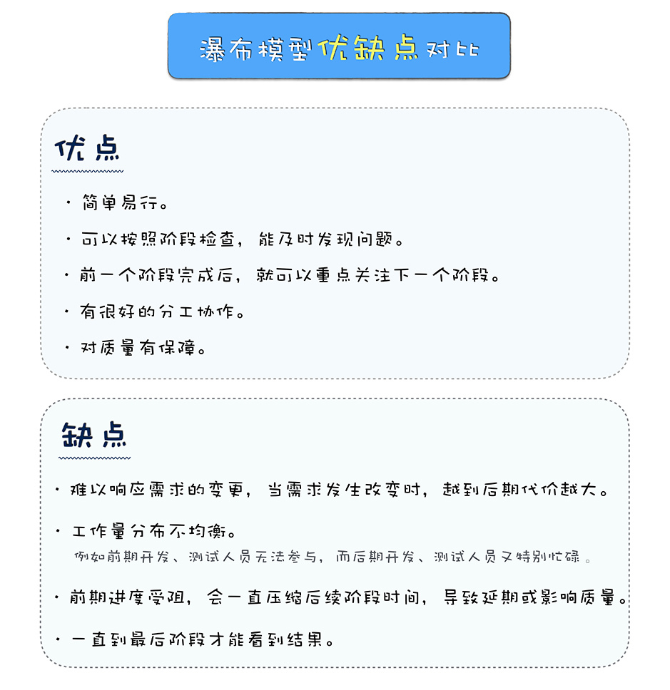

- 00 开篇词 你为什么应该学好软件工程？.md.html
- 01 到底应该怎样理解软件工程？.md.html
- 02 工程思维：把每件事都当作一个项目来推进.md.html
- 03 瀑布模型：像工厂流水线一样把软件开发分层化.md.html
- 04 瀑布模型之外，还有哪些开发模型？.md.html
- 05 敏捷开发到底是想解决什么问题？.md.html
- 06 大厂都在用哪些敏捷方法？（上）.md.html
- 07 大厂都在用哪些敏捷方法？（下）.md.html
- 08 怎样平衡软件质量与时间成本范围的关系？.md.html
- 09 为什么软件工程项目普遍不重视可行性分析？.md.html
- 10 如果你想技术转管理，先来试试管好一个项目.md.html
- 11 项目计划：代码未动，计划先行.md.html
- 12 流程和规范：红绿灯不是约束，而是用来提高效率.md.html
- 13 白天开会，加班写代码的节奏怎么破？.md.html
- 14 项目管理工具：一切管理问题，都应思考能否通过工具解决.md.html
- 15 风险管理：不能盲目乐观，凡事都应该有B计划.md.html
- 16 怎样才能写好项目文档？.md.html
- 17 需求分析到底要分析什么？怎么分析？.md.html
- 18 原型设计：如何用最小的代价完成产品特性？.md.html
- 19 作为程序员，你应该有产品意识.md.html
- 20 如何应对让人头疼的需求变更问题？.md.html
- 21 架构设计：普通程序员也能实现复杂系统？.md.html
- 22 如何为项目做好技术选型？.md.html
- 23 架构师：不想当架构师的程序员不是好程序员.md.html
- 24 技术债务：是继续修修补补凑合着用，还是推翻重来？.md.html
- 25 有哪些方法可以提高开发效率？.md.html
- 26 持续交付：如何做到随时发布新版本到生产环境？.md.html
- 27 软件工程师的核心竞争力是什么？（上）.md.html
- 28 软件工程师的核心竞争力是什么？（下）.md.html
- 29 自动化测试：如何把Bug杀死在摇篮里？.md.html
- 30 用好源代码管理工具，让你的协作更高效.md.html
- 31 软件测试要为产品质量负责吗？.md.html
- 32 软件测试：什么样的公司需要专职测试？.md.html
- 33 测试工具：为什么不应该通过QQ微信邮件报Bug？.md.html
- 34 账号密码泄露成灾，应该怎样预防？.md.html
- 35 版本发布：软件上线只是新的开始.md.html
- 36 DevOps工程师到底要做什么事情？.md.html
- 37 遇到线上故障，你和高手的差距在哪里？.md.html
- 38 日志管理：如何借助工具快速发现和定位产品问题 ？.md.html
- 39 项目总结：做好项目复盘，把经验变成能力.md.html
- 40 最佳实践：小团队如何应用软件工程？.md.html
- 41 为什么程序员的业余项目大多都死了？.md.html
- 42 反面案例：盘点那些失败的软件项目.md.html
- 43 以VS Code为例，看大型开源项目是如何应用软件工程的？.md.html
- 44 微软、谷歌、阿里巴巴等大厂是怎样应用软件工程的？.md.html
- 45 从软件工程的角度看微服务、云计算、人工智能这些新技术.md.html
- 一问一答第1期 30个软件开发常见问题解决策略.md.html
- 一问一答第2期 30个软件开发常见问题解决策略.md.html
- 一问一答第3期 18个软件开发常见问题解决策略.md.html
- 一问一答第4期 14个软件开发常见问题解决策略.md.html
- 一问一答第5期 22个软件开发常见问题解决策略.md.html
- 学习攻略 怎样学好软件工程？.md.html
- 特别放送 从软件工程的角度解读任正非的新年公开信.md.html
- 结束语 万事皆项目，软件工程无处不在.md.html
- 捐赠
03 瀑布模型：像工厂流水线一样把软件开发分层化
你好，我是宝玉，我今天分享的主题是：瀑布模型，像工厂流水线一样把软件开发分层化。
可以这么说：瀑布模型算是现代软件工程的起源，软件工程的发展，很大部分都是构建于瀑布模型的基础之上的。我们后面所学的软件工程的很多内容，都是源自瀑布模型的衍生，或者其中某个阶段的细分。
我在上大学期间，还并不懂软件工程瀑布模型这些知识。当时我自学了点编程知识，然后开始在外面接点做网站的小活，开发模式非常简单，接到活直接写代码，有问题就改。这样下来居然也做了不少小网站，但是大一点的网站项目就搞不定了，甚至手头的小网站项目，找个同学帮忙都不知道大家该怎么分工。
所以当时我也很好奇，大的软件系统是如何开发出来的？那么多人一起开发一个软件，系统是如何分工协作的？
后来到大三的时候，开始系统学习软件工程课程，我才开始了解到一些理论知识，包括我做小网站的这种开发模式，都有一个专业术语，叫边写边改（Code And Fix）模型。
这不是我的发明。在 1960 年初，软件开发刚开始起步，这时的软件开发是混沌无序的，那时候编程语言还是汇编语言为主，开发模式就是边写边改模型。如果程序员水平高，功能简单，还是可行的。
后来软件开发需求越来越多，功能越来越复杂，从事软件开发的人员水平也参差不齐，这种落后的软件生产方式已经无法满足迅速增长的计算机软件需求，从而导致软件开发与维护过程中出现一系列严重问题，这个现象也被称之为“软件危机”。
像这种边写边改的开发模式，为什么说不能满足复杂软件项目的需要呢？主要是有几方面的原因：
整个开发过程不可控，想基于这种开发模式做项目计划太难；
项目的人数多了后，无法有效分工协作；
项目开始的时候对需求几乎没有进行有效分析，对需求的理解容易出现偏差，后期导致很多返工；
项目编码完成后，没有有效测试，运行时 Bug 非常多。
瀑布模型的诞生
为了解决软件危机中的这些问题，在 1970 年，Winston Royce 博士借鉴了其他工程领域的思想，比如建筑工程，提出了瀑布开发模型，指出软件开发应有完整之周期，并将软件开发过程分成了若干阶段。像瀑布一样，从上往下，完成一个阶段继续下一个阶段。

瀑布模型把整个项目过程分成了六个主要阶段：
一、问题的定义及规划
这个阶段是需求方和开发方共同确定软件开发目标，同时还要做可行性研究，以确定项目可行。这个阶段会产生需求文档和可行性研究报告。
二、需求分析
对需求方提出的所有需求，进行详细的分析。这个阶段一般需要和客户反复确认，以保证能充分理解客户需求。最终会形成需求分析文档。
三、软件设计
根据需求分析的结果，对整个软件系统进行抽象和设计，如系统框架设计，数据库设计等等。最后会形成架构设计文档。
四、程序编码
将架构设计和界面设计的结果转换成计算机能运行的程序代码。
五、软件测试
在编码完成后，对可运行的结果对照需求分析文档进行严密的测试。如果测试发现问题，需要修复。最终测试完成后，形成测试报告。
六、运行维护
软件开发完成，正式运行投入使用。后续需要继续维护，修复错误和增加功能。交付时需要提供使用说明文档。
瀑布模型在提出后，因为其简单可行，切实有效，马上就在很多软件项目中应用起来，一直到 2000 年前后，都是最主流的软件开发模型，即使到现在，你也能在很多软件项目中看到它的影子。
也是从那时开始，有了“软件生命周期”(Software Life Cycle,SLC) 的概念。
软件生命周期是软件的产生直到报废或停止使用的生命周期。而像瀑布模型这样，通过把整个软件生命周期划分为若干阶段来管理软件开发过程的方法，叫软件生命周期模型。
虽然现在瀑布模型已经不是最主流的开发模式，那为什么我们现在还要学习瀑布模型呢？
因为不管什么软件项目，不管采用什么开发模式，有四种活动是必不可少的，那就是需求、设计、编码和测试。而这四项活动，都是起源自瀑布模型，也是瀑布模型中核心的部分。
学好瀑布模型，才可以帮助你更好的理解这些内容。
如何用瀑布模型开发项目？
如果单纯看这些阶段的概念介绍，还是有点难以直观地理解整个软件开发过程，在这里拿我经历过的一个网站开发项目作为案例，来看一下如何使用瀑布模型来开发一个软件项目。
- 问题的定义及规划的阶段
大概在 2009 年的时候，Web2.0 还正火，公司老板打算做一个游戏领域的社交网站。
问题很明确，就是要做一个社交网站，并且用户能按照游戏来交友。至于可行性分析嘛，按照当时 Web2.0 的热度，这个似乎是可行的。那么就立项了。
然后老板问项目经理，这么样一个网站，你大概得多久做出来？项目经理一看，这么复杂一个网站，怎么也得半年才能做出来一个版本，于是说半年。老板说半年太久了，给你三个月吧，项目经理心中叫苦，最后讨价还价，决定四个月上线。
于是，项目经理按照四个月开始倒推项目计划：
需求分析——2 周；
软件设计——4 周；
程序编码——6 周；
软件测试——4 周。
- 需求分析的阶段
在项目立项后，产品经理首先和老板充分的沟通，了解老板的想法是什么，要做一个什么样的网站。在了解老板的想法后，产品经理对市场上同类的社交网站进行了调研，然后用原型工具设计了网站的原型。原型虽然很简陋，但是从原型可以看出来，项目要做成什么样子，便于确认需求。
原型拿给老板看后，老板再根据自己的想法提一些反馈，这样反复沟通确认，在原型设计确认清楚后，产品经理开始撰写产品设计文档，将原型设计落实到文档，将整个网站划分成不同的功能模块，例如用户注册、登录、添加好友等，确定每个功能模块需要哪些功能。
这个阶段产品经理是最忙的，那这时候其他人在干嘛呢？其他人都还挺轻松的，架构师研究网上流行的社交网站都采用什么架构，程序员、测试看看技术文档。
虽然最终确定了产品设计文档，但是因为中间反复确认的时间过长，原定 2 周能完成的需求分析，最后拖到了 3 周。项目经理一看，最终上线时间点没办法延后，那就只好压缩编码时间了，不行加加班！
项目计划变成了：
需求分析——3 周；
软件设计——4 周；
程序编码——5 周；
软件测试——4 周；
- 软件设计
产品经理的产品设计文档确定后，架构师开始做架构设计，UI 设计师开始设计 UI，测试经理开始针对产品设计文档写测试用例，产品经理还要进一步设计交互。
由于前期原型设计工作做的好，所以 UI 设计还是很顺利的，主风格定下来以后，各个界面就是细节的确认了。
因为产品设计文档写的详细，输入输出很清楚，测试用例也进展顺利。
至于架构设计这边，架构师很有经验，先把整体架构确定，写了个技术方案文档，和大家一起开会讨论，几次后确认了整体技术方案。按照功能模块一拆分，把其中一个功能模块做了一个样板，然后把各个子模块分给开发人员，大家一起协助做详细设计，然后再分别确认。
大家都如火如荼地忙起来了。如果一切顺利的话，软件设计 4 周应该能完成，可以进入编码阶段了。但是软件设计进行到第 3 周的时候，老板的想法发生了一些变化。
因为市场上已经有了游戏社交的网站，而且运营结果不算太好，而网页游戏正流行，如果我们的平台能接入网页游戏，这会是个不错的机会。
于是需求变更了，我们要能和其他网页游戏的用户系统对接，这个需求最开始是没有提出来，也没有考虑的。
项目经理考虑再三，决定还是接受这个需求变更，但是希望能多一些时间，老板没同意，认为时间点很重要，哪怕砍一点功能，牺牲一点质量也要如期上线。但就算这时候砍功能，设计工作还是少不了多少。
于是产品经理重新修改相应原型，再确认，再重新修改产品设计文档。变更完后，UI 设计的相关页面重新修改设计、测试人员修改测试用例，最苦的是架构师，当初没有考虑到要和其他用户系统对接，现在用户系统的设计都要重新考虑了。
于是为了赶进度，项目组开始加班，即使如此，软件设计阶段也推迟到了第 5 周才勉强完成。
项目计划又变了：
需求分析——3 周；
软件设计——5 周；
程序编码——5 周；
软件测试——3 周。
- 程序编码
终于进入编码阶段了，为了保证进度，加班还在继续，哪怕前期做了大量的设计，真到编码的时候还是有好多没有考虑到的，同时各个模块之间还存在相互依赖，有时候虽然自己功能开发完成，还需要等待其他人的功能完成才能调试，所以 5 周时间很快就过去了，而程序还不能完整地跑起来。
其实中间还有个小插曲，老板觉得还要加上支付的功能，但是项目经理觉得这个阶段改需求已经不可能了，以辞职为威胁总算顶回去了，打算放在下个版本加上。
终于到第 6 周的时候，有了一个勉强可以测试的版本。
项目计划现在变成了：
需求分析——3 周
软件设计——5 周
程序编码——6 周
软件测试——2 周
- 软件测试
留给测试的时间只有两周了，但是前期实在 bug 太多，两周测试时间过去，软件质量还是很糟糕，完全无法正常使用，于是项目不得不延期，一直延期了 4 周后，才算具备上线条件。
所以最终的项目计划差不多是：
需求分析——3 周
软件设计——5 周
程序编码——6 周
软件测试——6 周
和原定计划已经延迟了 4 周。
- 运行维护
网站上线后，好在前期并没有多少用户，但是线上 Bug 还是不少，需要继续修复线上发现的 Bug。
瀑布模型的优缺点
以上案例是我参与过的、用瀑布模型开发的软件项目的一个缩影，你会发现瀑布模型其实跟我们传统的建筑建造方式非常类似。我们拿盖房子的过程来看看瀑布模型。
客户想要盖一栋房子（初步的想法）。
客户一开始可能没想清楚想要什么样子的房子。（客户对需求还不清楚）
施工方开始找客户确认：用途是什么，要个几层的房子，什么建筑风格，希望什么时间完工，预算多少。（问题定义）
施工方根据客户提的需求，对比工期和预算，评估是不是值得做。（可行性研究）
施工方评估后觉得可行，于是和客户签订合同，约定价钱和工期。（立项，制定项目计划）
施工方开始跟客户沟通确认需求，例如每层户型如何，将来的装修风格等。（需求分析）
确认完需求后，施工方开始出建筑施工图，还画了漂亮的建筑效果图。（系统设计和 UI 设计）
施工方按照设计图开始施工。（程序编码）
这期间如果客户去参观施工情况，客户只能看到毛胚，只有最后施工完成才能看到最终样子。（在中间客户看不到结果，只有最后能看到结果）
原定二层是两个卧室，在房子施工过程中，突然客户说两个卧室不够，要改成三个卧室。这意味着施工方要对施工图重新设计，很多已经建好的房间要拆掉重建。（瀑布模型是很难响应需求变更的，而且越到后期代价越大）
工程质量检查人员对施工结果进行质量检测，如果不满足质量要求，需要修改。（测试）
最后验收通过后，客户入住。（上线）
所以你看，用瀑布模型开发软件，就像建筑工程里，盖房子一样简单和自然。每个阶段都有侧重的事情，就像需求阶段专注于搞清楚需求，编码阶段专注于实现。
最重要的是，这种编码前先设计、编码后测试、整个过程重视文档的方式，开发出来的产品，质量相对是有保障的。
但用瀑布模式开发，也存在一些问题。
最大的问题就是不能及时响应需求变更，越到后期变更代价越大。另外，通常要到最后阶段才能看到结果是什么样子。
我以前参与过的用瀑布模型方式开发的项目中，在开发和测试阶段加班是常态，原因就在于需求分析和系统设计可能会有延误，从而延迟了编码阶段的开始时间，压缩了编码实现的时间。
而在编码阶段，通常会发现很多设计时没有考虑清楚的问题，或者遇到需求变更，导致编码阶段即使加班加点也会大大延期，最后留给测试阶段的时间就不够多了。
鉴于瀑布模型存在的这些问题，后来又有很多人提出了其他的软件生命周期模型，比如快速原型开发模型、增量模型、迭代模型，以期保留瀑布模型的这些优点，克服瀑布模型中存在的问题。我们将会在后面的章节中，详细介绍瀑布模型衍生出的其他开发模型。

总结
从瀑布模型提出至今，将近 50 年过去了，虽然现在大家一提起瀑布模型，似乎已经成了落后的代名词，但在当时是有划时代意义的。如果类比一下，我觉得瀑布模型的价值相当于工业界第一次提出流水线作业。
1769 年，英国人乔赛亚·韦奇伍德开办埃特鲁利亚陶瓷工厂。以前制作陶瓷只有“制陶工”一个工种，一个人从挖泥、制胚到最后烧制，要求很高。但是乔赛亚把原本的制陶流程从开始到结束分成了若干阶段，每个阶段可以由不同的人完成，从单一的制陶工分成了挖泥工、运泥工、拌土工、制坯工等，这样就大大提高了生产效率，也降低对工人的要求。
同理，瀑布模型的出现，也解决了软件项目开发中的几个重要问题。
让软件开发过程有序可控。瀑布模型的每个阶段都有明确的任务，每个阶段都有明确的交付产物，都有相应的里程碑。这些让整个过程更可控，而且能及早发现问题。
让分工协作变成可能。瀑布模型的六个阶段，也让软件开发产生相应的基础分工：项目经理、产品经理、架构师、软件工程师、测试工程师、运维工程师。
质量有保障。瀑布模型每个阶段都需要交付相应的文档，而文档的撰写和评审，可以帮助在动手之前把问题沟通清楚，想清楚。瀑布模型在编码结束后，会有严密的测试，只有测试验收通过后，才能上线发布。这些措施都让软件的质量更有保障。
© 2019 - 2023 Liangliang Lee. Powered by gin and hexo-theme-book.